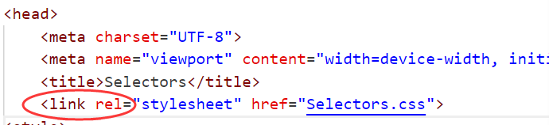
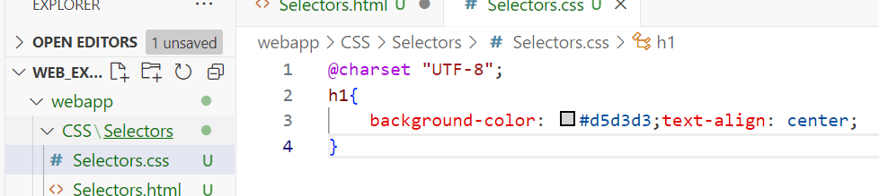
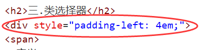
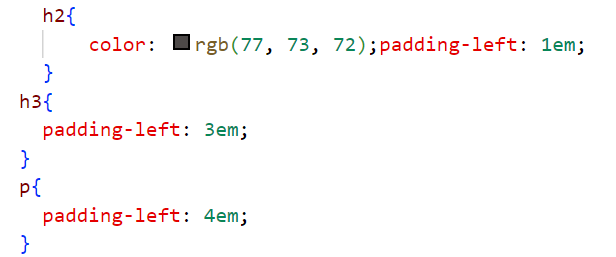

CSS代码写在单独的.CSS文件中，在HTML中用link标签引入。
例如：<link rel="style sheet" herf'"./my.css">
 直接在标签里加style。例如：
<div style="color:red;font_size:30px;"<这是div标签</div>
使用标签名作为选择器，选中的标签设置相同的样式，在内部样式表中用。
1.作用：查找页面上所有标签，设置相同的样式。
2.通配符选择器：*，不需要调用选择器，浏览器会自动查找页面中所有标签，设置相同的样式。
定义：由两个或多个基础选择器，通过不同的方式组合而成。
1.作用:根据元素的结构关系查找元素。
1.作用：创建虚拟元素(伪元素)，用来摆放装饰性元素
(1).必须有 content :"";属性，用来设置伪元素的内容,无内容引号内留白
(2).伪元素默认是行内显示模式
(3).权重和标签选择器相同